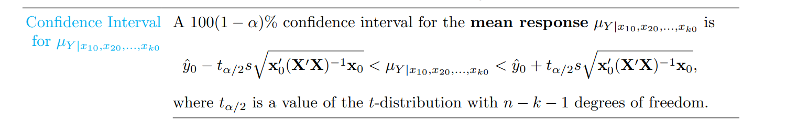
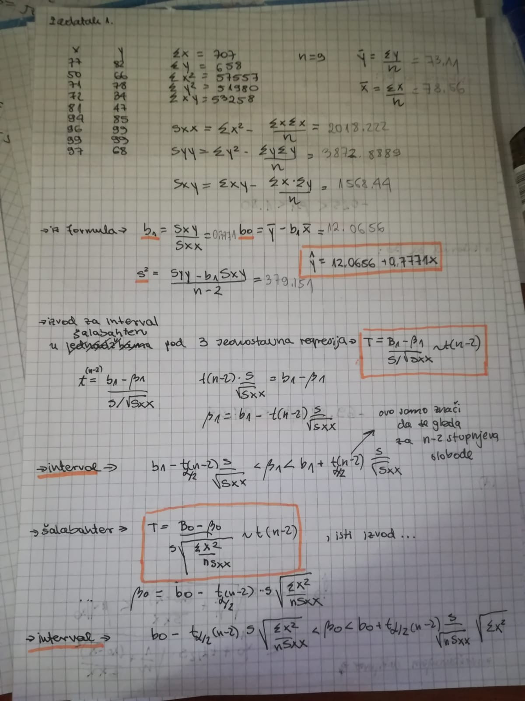
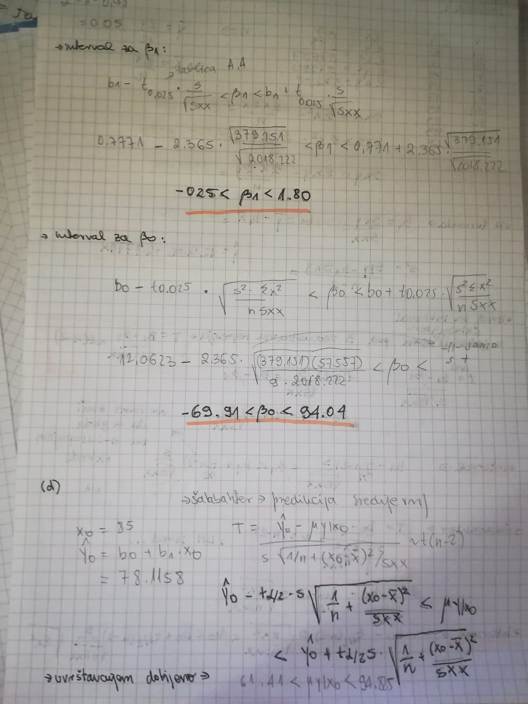
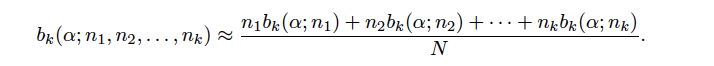
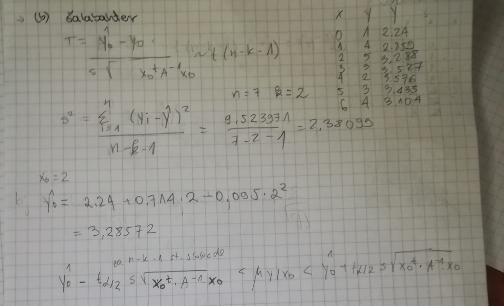
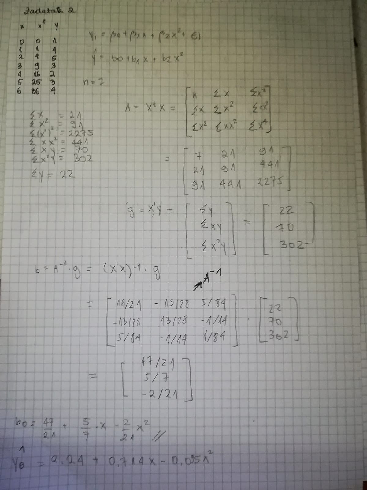
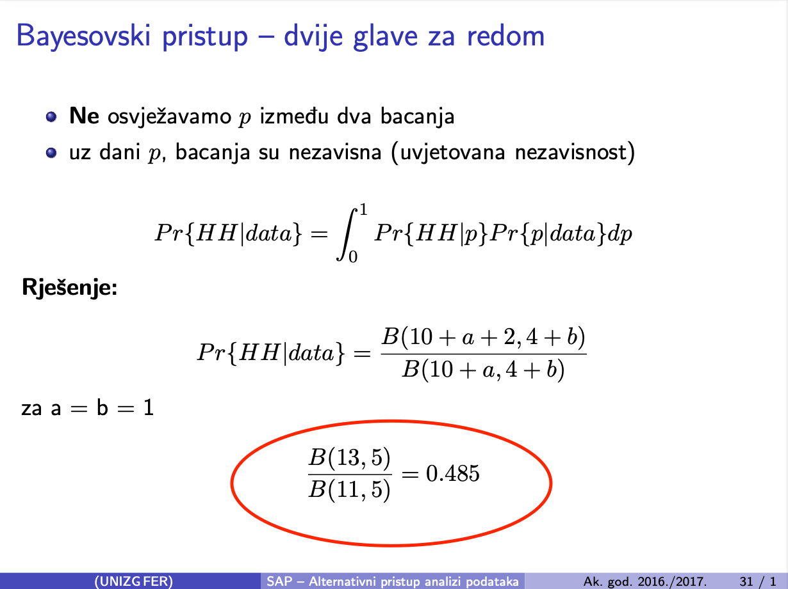
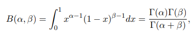
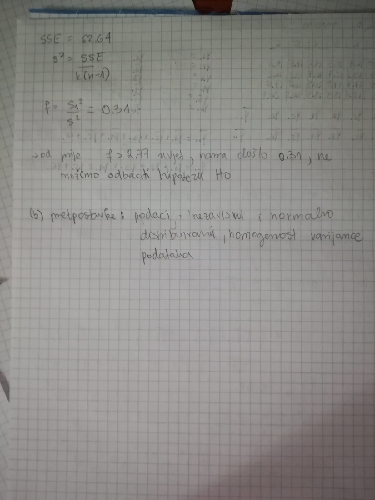
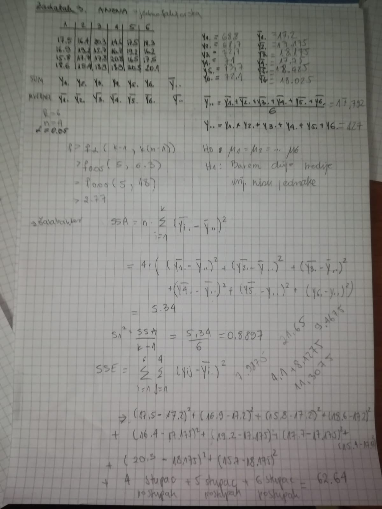

ima netko rjesen ZI 16/17?
Jel ima netko možda još neke ispite iz sap-? netko od starijih
 Zna netko kako se racuna ovo pod korijenom najjednostavnije? Jel se baš mora ić na matricu?
Fish99 nikak.
doduse ovo zahtjeva inverz matrice tako da a) ili nece doc uopce b) ili ce vam inverz bit zadan. nama je na ZI 2019 inverz 5×5 bio vec napisan na plocu, morali smo samo raspisat kao da se vidi kak bi dosli do tog al je asistent begusic napiso na plocu rjesenje pa smo dalje kao s tim racunali
Fish99 casio
 
spenadla msm da to nece doc u zavrsni, jer smo vec imali takav zadatak na MI
pp jel su spominjali kada jel ulazi samo novo gradivo?
Kako da dobijem kritičnu vrijednost Bartletovog testa, ako nemamo tu tablicu na testu?
Ducky vjerojatno to nece doc bas zato jer nemamo tablicu, a ako bude vjerojatno ce nam oni reci koja je kriticna vrijednost
Ducky 
gladiator kako?
Fish99 Menu -> Matrix -> define matrix x0, define matrix A -> računaš Transposition(x0) * A^-1 * x0
Na 991EX moraš za inverz baš koristiti tipku za x^-1
na 991ES imaš baš funkciju za inverz iirc
*** Koliko ja znam, nisu, al po zavrsnom iz 2017 mi se cini da nema starog gradiva.
 
spenadla najgori dio je odrađen… zadano je da je x = 2 pa će ti x0 matrica biti [1 2 4], A^-1 već imaš, s2 izračunaš po formuli, i onda se lako izračunaju granice intervala
Zna netko kako se ovo izračuna?
nika_1999  najlakše ti je da zapamtiš da je gamma(n) = (n-1)! i onda B(a,b) = (a-1)! * (b-1)! / (a + b - 1)!
 
Evo potvrdeno od Begusica, postupci ponovnog uzrokovanja nece biti u ispitu